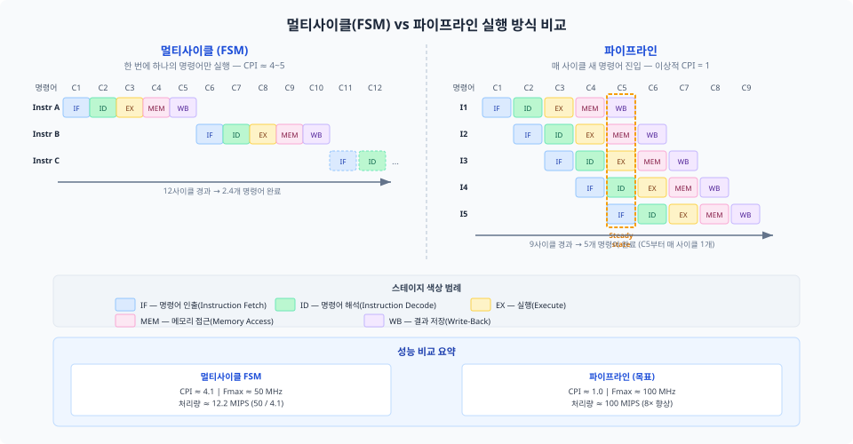
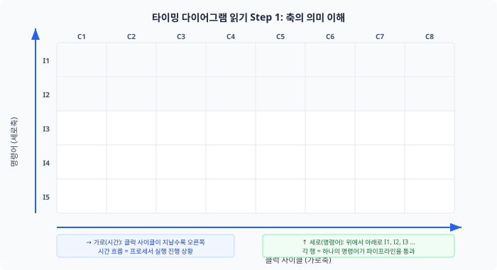
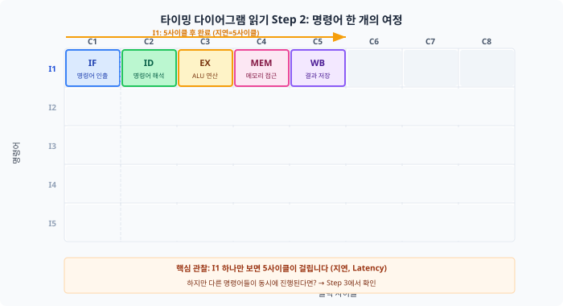
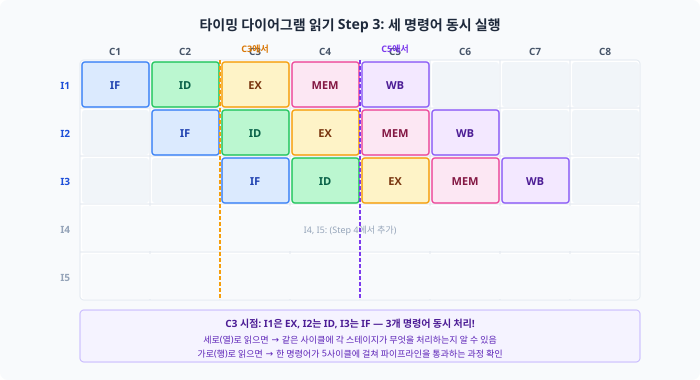
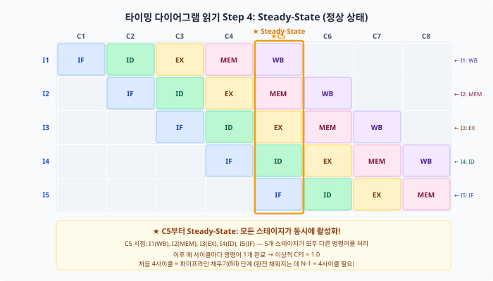
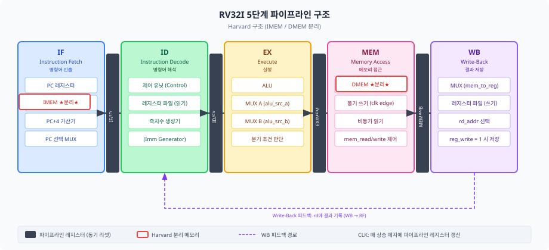
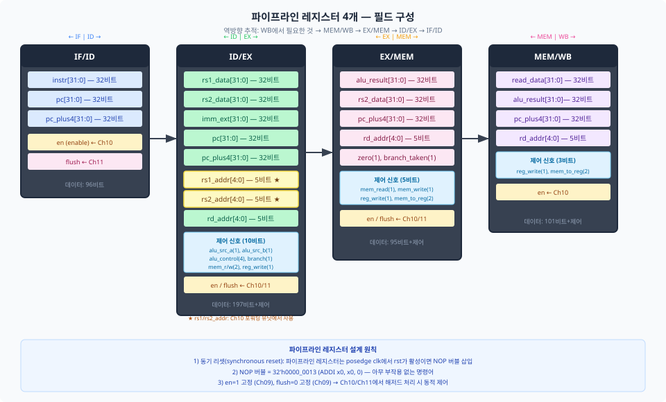
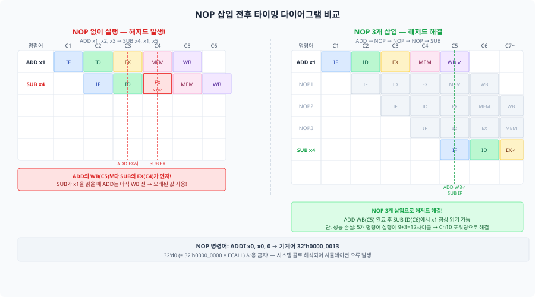

Ch08에서 배운 5개의 FSM 상태 이름이 파이프라인에서도 그대로 사용됩니다. IF, ID, EX, MEM, WB — 이 친숙한 이름들이 이제는 순차적으로 실행되는 FSM 상태가 아니라, 동시에 서로 다른 명령어를 처리하는 독립적인 하드웨어 스테이지가 됩니다. 이 챕터에서는 멀티사이클 FSM 설계에서 파이프라인으로 도약하는 핵심 원리를 이해하고, 4개의 파이프라인 레지스터를 설계하며, NOP 삽입 방식으로 기본 파이프라인의 동작을 처음으로 확인합니다.
세탁소를 생각해 봅시다. 손님의 옷 한 벌을 세탁기에서 빨고(IF), 건조기에서 말리고(ID/EX), 다림질하고(MEM), 포장하는(WB) 데 총 4시간이 걸린다고 합니다. Ch08의 멀티사이클 CPU가 바로 이 방식입니다. 한 벌이 완전히 끝나야 다음 옷을 세탁기에 넣습니다. 그렇다면 세탁기는 전체 시간의 4분의 1만 사용되고 나머지 시간에는 놀고 있습니다.
영리한 세탁소 주인은 이렇게 합니다. 첫 번째 옷이 건조기로 넘어가자마자 세탁기에 두 번째 옷을 넣습니다. 두 번째 옷이 건조기로 넘어가면 세탁기에 세 번째 옷을 넣습니다. 잠시 후 모든 기계가 동시에 가동됩니다. 이것이 파이프라인(Pipeline)입니다. 개별 옷 한 벌을 처리하는 시간(지연, Latency)은 여전히 4시간이지만, 시간당 처리량(Throughput)은 4배 향상됩니다.
물론 현실에서는 이상적으로 작동하지 않습니다. 고급 드레스는 세탁기에서 손빨래가 필요해서 시간이 더 걸리고, 다음 옷이 기다려야 할 수 있습니다. 파이프라인에서도 이런 "막힘"이 발생하며, 이를 해저드(Hazard)라고 합니다. 이 챕터에서는 먼저 이상적인 파이프라인을 구축하고, NOP로 해저드를 임시 해결하는 방법을 배웁니다. 해저드의 자동 해결은 Ch10과 Ch11에서 다룹니다.
Ch08에서 배운 FSM 상태들을 떠올려 보십시오. IF(명령어 인출), ID(명령어 해석), EX(실행), MEM(메모리 접근), WB(결과 저장)의 5개 상태가 순서대로 전이되었습니다. 멀티사이클 FSM에서는 이 5개 상태를 한 명령어가 점유합니다. IF 상태에서 명령어를 인출하는 동안 EX 하드웨어는 완전히 유휴 상태입니다. ALU가 연산하는 동안(EX) 명령어 메모리는 쉬고 있습니다.
파이프라인의 핵심 통찰은 간단합니다. 명령어가 다음 스테이지로 넘어가면, 이전 스테이지는 바로 다음 명령어를 처리할 수 있습니다. Ch08의 FSM 상태들이 이제 동시에 서로 다른 명령어를 처리하는 독립적인 하드웨어 스테이지가 됩니다. 상태의 이름(IF, ID, EX, MEM, WB)은 그대로이지만, 그 의미가 완전히 달라집니다.
Ch08의 FSM에서 IF 상태가 완료되면 FSM 상태 레지스터가 "ID 상태"로 전이되고, IF 하드웨어(PC, IMEM)는 다음 사이클 동안 아무것도 하지 않습니다. 파이프라인에서는 IF 스테이지가 완료된 즉시 인출한 명령어를 파이프라인 레지스터(Pipeline Register)에 저장하고, 다음 사이클에 새 명령어를 인출하기 시작합니다.
결정적인 구조 변화가 한 가지 있습니다. Ch08의 멀티사이클 설계는 단일 제어 유닛(FSM)이 전체 실행 흐름을 순차적으로 지휘했습니다. 파이프라인에서는 제어 신호가 데이터와 함께 파이프라인 레지스터를 통해 스테이지를 따라 이동합니다. IF/ID 레지스터에서 해석된 제어 신호는 ID/EX를 거쳐 EX 스테이지에 도달할 때까지 레지스터에 보존됩니다. FSM이 없어지고, 그 역할을 파이프라인 레지스터와 단순한 조합 논리 제어 유닛이 나눠 맡습니다.

Ch08의 멀티사이클 CPU는 평균 CPI(Cycles Per Instruction) ≈ 4.1로, 클럭 주파수 50 MHz에서 처리량 ≈ 12.2 MIPS를 달성했습니다. 파이프라인은 이상적인 조건에서 CPI = 1.0을 달성하며, 클럭 주파수 100 MHz(임계 경로가 짧아짐)에서 처리량 ≈ 100 MIPS를 목표로 합니다. 약 8배의 성능 향상입니다.
임계 경로(Critical Path)가 짧아지는 이유도 이해해야 합니다. 멀티사이클에서는 하나의 클럭 사이클이 긴 경로(예: IMEM → IR → 제어유닛 계산 전체)를 수용해야 했습니다. 파이프라인에서는 각 스테이지가 독립적인 작업만 수행하므로, 임계 경로가 5분의 1 수준으로 짧아집니다. 클럭 주파수를 2배로 높일 수 있는 이유입니다.
마일스톤 1 ★: 지금 이 순간이 중요한 전환점입니다. Ch01~Ch08에서 쌓은 지식이 파이프라인의 기반이 됩니다. IMEM, DMEM, ALU, 레지스터 파일, ImmGen — 이 모듈들을 개별 스테이지에 배치하기만 하면 됩니다. Ch08에서 배운 제어 신호 이름도 그대로 사용됩니다. 낯선 것은 파이프라인 레지스터뿐입니다.
파이프라인을 이해하는 핵심 도구는 타이밍 다이어그램(Timing Diagram)입니다. 반도체 면접과 설계 리뷰에서 항상 등장하는 이 다이어그램을 읽고 그리는 능력을 이 절에서 체계적으로 학습합니다. 4단계 점진적 학습법으로 접근하겠습니다.
파이프라인의 성능을 정확히 분석하려면 두 가지 지표를 엄밀히 구분해야 합니다.
이 두 개념의 관계를 "고속도로 비유"로 이해해 봅시다. 서울에서 부산까지 고속도로를 타면 한 차량의 이동 시간(지연)은 4시간입니다. 파이프라인은 차선을 넓히는 것이 아니라 여러 차량이 동시에 같은 도로를 달리게 하는 것입니다. 차 한 대가 부산에 도착하는 데 걸리는 시간(지연)은 여전히 4시간이지만, 시간당 부산에 도착하는 차량 수(처리량)는 크게 늘어납니다.

타이밍 다이어그램의 가로축은 클럭 사이클(C1, C2, C3, …)입니다. 오른쪽으로 갈수록 시간이 지납니다. 세로축은 명령어 번호(I1, I2, I3, …)입니다. 위에서 아래로 프로그램 순서대로 배열됩니다. 각 셀에는 해당 명령어가 해당 사이클에 어느 스테이지를 실행 중인지 기록됩니다.

명령어 I1 하나만 봅니다. C1에서 IF를 수행하고, C2에서 ID, C3에서 EX, C4에서 MEM, C5에서 WB를 수행합니다. I1 한 개의 지연은 5사이클입니다. 이 시간 동안 나머지 스테이지(ID, EX, MEM, WB)는 I1을 위해 사용되지 않으면 아무것도 하지 않습니다. 멀티사이클과 별 차이가 없어 보입니다. 차이는 다음 명령어에서 생깁니다.

I1이 C1에서 IF를 마치고 C2에서 ID로 이동하면, IF 스테이지가 비어집니다. I2가 C2에서 IF를 시작합니다. C3에서 I1은 EX, I2는 ID, I3는 IF를 동시에 수행합니다. C3 열을 세로로 읽어보십시오: EX, ID, IF — 3개 명령어가 서로 다른 스테이지에서 동시에 실행 중입니다.

N=5단계 파이프라인이 가득 차는 데 N-1=4사이클이 필요합니다. C5부터 모든 스테이지가 동시에 활성화됩니다. 이 상태를 Steady-State(정상 상태) 또는 Full Pipeline(파이프라인 포화 상태)라고 합니다. C5 열을 세로로 읽으면: I1(WB), I2(MEM), I3(EX), I4(ID), I5(IF) — 5개 명령어가 동시에 5개 스테이지를 점유합니다. 이후 매 사이클마다 명령어 1개가 WB를 완료합니다. 이상적 CPI = 1.0.
전체 N개 명령어를 k단계 파이프라인에서 실행하는 데 필요한 총 사이클 수는:
// 파이프라인 성능 공식
// N개 명령어, k단계 파이프라인
// 총 사이클 = (k - 1) + N // 채우기 단계 + 명령어 수
// 예: 100개 명령어, 5단계 파이프라인
// 총 사이클 = 4 + 100 = 104
//
// CPI = 104 / 100 = 1.04 (N이 커질수록 CPI → 1.0)
//
// 멀티사이클 대비 성능 향상 (이상적):
// Speedup = (N * CPI_multi) / ((k-1) + N)
// = (100 * 4.1) / (104) = 3.94x (N=100)
// N → ∞ 이면 Speedup → CPI_multi = 4.1x
//
// 클럭 주파수도 2배가 되므로:
// 실질 성능 향상 ≈ 4.1 * 2 = 8.2x
마일스톤 2 ★★: 타이밍 다이어그램을 읽을 수 있게 되었습니다. 이 능력은 Ch10의 포워딩, Ch11의 분기 예측, 그리고 실무 설계 검토에서 반드시 필요합니다. 타이밍 다이어그램이 아직 낯설다면 지금 A4 종이에 직접 그려보십시오. 손으로 그리는 연습이 가장 효과적입니다.
이 절에서 파이프라인 구조의 첫 번째 중요한 설계 결정을 내립니다: Ch07~Ch08의 Princeton(통합 메모리) 구조를 Harvard(분리 메모리) 구조로 전환합니다. 그 이유와 각 스테이지의 담당 작업을 명확히 정의하겠습니다.
Ch07에서 우리는 단일 메모리(Princeton 구조)를 사용했습니다. 이 구조에서 IF 스테이지(명령어 읽기)와 MEM 스테이지(데이터 읽기/쓰기)가 같은 메모리에 동시에 접근하려 합니다. 파이프라인에서 I1이 MEM 스테이지에 있고 I5가 IF 스테이지에 있을 때, 두 명령어가 동시에 단일 메모리를 접근하면 포트 충돌이 발생합니다. 이를 구조적 해저드(Structural Hazard)라고 합니다.
해결책은 명확합니다. 명령어 메모리(IMEM, Instruction Memory)와 데이터 메모리(DMEM, Data Memory)를 물리적으로 분리합니다. 이것이 Harvard 구조입니다. FPGA에서는 두 개의 별도 BRAM 블록 또는 LUTRAM을 사용하여 구현합니다. 메모리 접근 패턴도 다릅니다:

각 스테이지의 역할을 정확히 정의합니다.
PC(Program Counter) 레지스터가 가리키는 주소에서 IMEM으로부터 32비트 명령어를 읽습니다. 동시에 PC+4를 계산하여 다음 순차 실행 주소를 준비합니다. PC 레지스터는 파이프라인 레지스터와 달리 비동기 리셋(asynchronous reset)을 허용합니다. 이는 실습 환경에서 초기화 타이밍을 단순화하기 위한 설계 결정입니다.
IF 스테이지가 매 사이클 출력하는 신호: instr[31:0], pc[31:0], pc_plus4[31:0]
IF/ID 파이프라인 레지스터에서 명령어를 받아 세 가지 작업을 동시에 수행합니다. (1) 조합 논리 제어 유닛(Control Unit)이 명령어를 해석하여 제어 신호를 생성합니다. (2) 레지스터 파일에서 rs1, rs2 피연산자를 읽습니다. (3) 즉치수 생성기(ImmGen)가 명령어 타입에 따라 32비트 부호 확장 즉치수를 생성합니다. 이 세 작업은 모두 조합 논리이므로 병렬로 수행됩니다.
ID 스테이지가 ID/EX 레지스터에 저장하는 신호: rs1_data, rs2_data, imm_ext, pc, pc_plus4, rs1_addr, rs2_addr, rd_addr, 제어 신호 10비트
ALU가 연산을 수행합니다. alu_src_a MUX가 rs1_data를 선택하고, alu_src_b MUX가 rs2_data 또는 imm_ext를 선택합니다. alu_control[3:0] 신호에 따라 ALU가 덧셈, 뺄셈, AND, OR, XOR, SLT 등을 수행합니다. 분기 명령어의 경우 zero 신호와 branch 신호를 결합하여 branch_taken을 결정합니다.
EX 스테이지가 EX/MEM 레지스터에 저장하는 신호: alu_result, rs2_data, pc_plus4, rd_addr, zero, branch_taken, 제어 신호 5비트
LW(Load Word) 명령어는 alu_result를 메모리 주소로 사용하여 DMEM에서 32비트 데이터를 읽습니다. SW(Store Word) 명령어는 alu_result를 주소로, rs2_data를 쓸 데이터로 사용하여 DMEM에 씁니다. ALU 계산 명령어(R타입, I타입)는 MEM 스테이지에서 아무것도 하지 않고 alu_result를 그대로 통과시킵니다.
MEM 스테이지가 MEM/WB 레지스터에 저장하는 신호: read_data(LW용), alu_result(통과), pc_plus4(JAL용), rd_addr, 제어 신호 3비트
mem_to_reg[1:0] 신호에 따라 레지스터 파일의 rd에 저장할 데이터를 선택합니다. 00=alu_result(R/I타입), 01=read_data(LW), 10=pc_plus4(JAL/JALR). reg_write=1이면 레지스터 파일에 결과를 기록합니다. WB 스테이지의 쓰기 결과는 피드백 경로를 통해 ID 스테이지의 레지스터 파일 읽기와 동시에 이루어집니다. (레지스터 파일은 같은 사이클에 쓰기와 읽기를 동시 수행 가능 — "write-then-read" 또는 별도 포워딩으로 처리)
파이프라인 레지스터(Pipeline Register)는 파이프라인 설계의 핵심입니다. 각 스테이지 경계에 배치되어 현재 사이클의 계산 결과를 다음 사이클까지 보존합니다. 스테이지 이름을 따서 IF/ID, ID/EX, EX/MEM, MEM/WB 레지스터라고 합니다.
어떤 신호를 레지스터에 넣어야 하는지 결정하는 방법론으로 역방향 추적(Backward Tracing)을 사용합니다. "WB 스테이지에서 무엇이 필요한가?"를 먼저 묻고, 그것이 어디서 오는지를 역방향으로 추적하면 각 파이프라인 레지스터의 필드 목록을 체계적으로 결정할 수 있습니다.
WB가 필요한 것: 레지스터 파일 쓰기를 위해 (1) 쓸 데이터(ALU 결과 또는 메모리 읽기 값 또는 PC+4), (2) 목적지 레지스터 주소(rd_addr), (3) 쓰기 제어 신호(reg_write, mem_to_reg)가 필요합니다. 이 값들은 MEM 스테이지가 끝난 후 MEM/WB 레지스터에 저장되어야 합니다.
MEM이 필요한 것: 메모리 접근을 위해 (1) 메모리 주소(alu_result), (2) 쓸 데이터(rs2_data), (3) 접근 제어(mem_read, mem_write), 그리고 WB로 넘길 나머지 신호들이 필요합니다. 이 값들은 EX 스테이지가 끝난 후 EX/MEM 레지스터에 저장되어야 합니다.
이 역방향 추적을 IF/ID까지 반복하면 4개 파이프라인 레지스터의 전체 필드 목록이 완성됩니다.

ID/EX 레지스터에 rs1_addr[4:0]과 rs2_addr[4:0]이 포함된 이유를 설명해야 합니다. 이 두 필드는 Ch10의 포워딩 유닛(Forwarding Unit)에서 사용됩니다. EX 스테이지에서 ALU 연산을 시작하기 전에, 포워딩 유닛이 "이 명령어가 필요로 하는 레지스터 값이 아직 파이프라인의 뒷 단에 있는가?"를 검사합니다. 이 검사에 rs1_addr과 rs2_addr이 필요합니다. Ch09에서는 사용되지 않지만, Ch10에서 포워딩 유닛 연결 시 이미 레지스터에 있어야 합니다. 지금 포함시켜두는 것이 나중에 수정 범위를 최소화합니다.
모든 파이프라인 레지스터는 동기 리셋(Synchronous Reset)을 사용합니다. 리셋 시 파이프라인 레지스터에는 NOP 버블(NOP Bubble)이 채워집니다. PC 레지스터만 비동기 리셋을 허용합니다.
NOP 버블 값은 반드시 32'h0000_0013을 사용해야 합니다.
이는 ADDI x0, x0, 0의 기계어 표현으로, x0 레지스터(항상 0)에 0을 더해 x0에 저장하는 명령어입니다.
완전히 무해하며 어떤 레지스터도 변경하지 않고 메모리도 접근하지 않습니다.
32'd0(= 32'h0000_0000)을 NOP로 사용하면 안 됩니다.
RISC-V에서 32'h0000_0000은 ECALL 명령어의 변형으로 해석될 수 있어
시뮬레이터가 시스템 콜로 처리할 수 있습니다. 실제 하드웨어에서도 예측 불가능한 동작을 유발합니다.
IF/ID 파이프라인 레지스터의 구현을 예시로 살펴봅니다. 나머지 레지스터도 동일한 구조를 따릅니다.
// ============================================================
// IF/ID 파이프라인 레지스터
// 위치: IF 스테이지와 ID 스테이지 경계
// 리셋 전략: 동기 리셋 (synchronous reset)
// NOP 버블: 32'h0000_0013 (ADDI x0, x0, 0)
// ============================================================
module if_id_reg (
input logic clk,
input logic rst, // 동기 리셋 (active-high)
input logic en, // enable: 1=갱신, 0=보존 (Ch10 스톨용)
input logic flush, // flush: 1=NOP 버블 삽입 (Ch11 분기용)
// IF 스테이지 입력
input logic [31:0] if_instr,
input logic [31:0] if_pc,
input logic [31:0] if_pc_plus4,
// ID 스테이지 출력
output logic [31:0] id_instr,
output logic [31:0] id_pc,
output logic [31:0] id_pc_plus4
);
// NOP 버블 상수 정의 (ADDI x0, x0, 0)
localparam logic [31:0] NOP = 32'h0000_0013;
always_ff @(posedge clk) begin
if (rst || flush) begin
// 동기 리셋 또는 플러시: NOP 버블 삽입
id_instr <= NOP;
id_pc <= 32'd0;
id_pc_plus4 <= 32'd0;
end else if (en) begin
// enable=1: 정상 갱신
id_instr <= if_instr;
id_pc <= if_pc;
id_pc_plus4 <= if_pc_plus4;
end
// enable=0 (스톨): 현재 값 유지 (레지스터 값 변경 없음)
end
endmodule
주목할 점이 있습니다. flush 포트가 선언되어 있지만 Ch09에서는 사용하지 않습니다.
Ch09에서는 최상위 모듈에서 flush=1'b0으로 고정 연결합니다.
이제 ID/EX 파이프라인 레지스터를 구현합니다. 제어 신호를 구조체(struct) 형태로 묶어 관리하면 코드가 간결해집니다.
// ============================================================
// ID/EX 파이프라인 레지스터 — 제어 신호 구조체 포함
// ============================================================
// 파이프라인 제어 신호 패키지 (최상위 파일 또는 별도 패키지에 선언)
typedef struct packed { /* struct packed: IEEE 1800-2017 표준, Vivado에서 합성 가능 */
logic alu_src_a; // ALU A 입력 선택 (0=rs1, 1=pc)
logic alu_src_b; // ALU B 입력 선택 (0=rs2, 1=imm)
logic [3:0] alu_control; // ALU 연산 종류
logic branch; // 분기 명령어 여부
logic mem_read; // 메모리 읽기 활성화
logic mem_write; // 메모리 쓰기 활성화
logic reg_write; // 레지스터 쓰기 활성화
logic [1:0] mem_to_reg; // WB 데이터 선택 (00=ALU, 01=MEM, 10=PC+4)
logic jump; // 점프 명령어 여부
} ctrl_t;
module id_ex_reg (
input logic clk,
input logic rst,
input logic en,
input logic flush,
// 데이터 입력
input logic [31:0] id_rs1_data,
input logic [31:0] id_rs2_data,
input logic [31:0] id_imm_ext,
input logic [31:0] id_pc,
input logic [31:0] id_pc_plus4,
input logic [4:0] id_rs1_addr, // ★ Ch10 포워딩 유닛용
input logic [4:0] id_rs2_addr, // ★ Ch10 포워딩 유닛용
input logic [4:0] id_rd_addr,
// 제어 신호 입력
input ctrl_t id_ctrl,
// 출력
output logic [31:0] ex_rs1_data,
output logic [31:0] ex_rs2_data,
output logic [31:0] ex_imm_ext,
output logic [31:0] ex_pc,
output logic [31:0] ex_pc_plus4,
output logic [4:0] ex_rs1_addr,
output logic [4:0] ex_rs2_addr,
output logic [4:0] ex_rd_addr,
output ctrl_t ex_ctrl
);
localparam ctrl_t NOP_CTRL = '{
alu_src_a: 1'b0,
alu_src_b: 1'b0,
alu_control: 4'b0000,
branch: 1'b0,
mem_read: 1'b0,
mem_write: 1'b0,
reg_write: 1'b0,
mem_to_reg: 2'b00,
jump: 1'b0
};
always_ff @(posedge clk) begin
if (rst || flush) begin
ex_rs1_data <= 32'd0;
ex_rs2_data <= 32'd0;
ex_imm_ext <= 32'd0;
ex_pc <= 32'd0;
ex_pc_plus4 <= 32'd0;
ex_rs1_addr <= 5'd0;
ex_rs2_addr <= 5'd0;
ex_rd_addr <= 5'd0;
ex_ctrl <= NOP_CTRL;
end else if (en) begin
ex_rs1_data <= id_rs1_data;
ex_rs2_data <= id_rs2_data;
ex_imm_ext <= id_imm_ext;
ex_pc <= id_pc;
ex_pc_plus4 <= id_pc_plus4;
ex_rs1_addr <= id_rs1_addr;
ex_rs2_addr <= id_rs2_addr;
ex_rd_addr <= id_rd_addr;
ex_ctrl <= id_ctrl;
end
end
endmodule
이제 EX/MEM 파이프라인 레지스터를 구현합니다.
// EX/MEM 파이프라인 레지스터 모듈
// EX 스테이지 출력 → MEM 스테이지 입력
// MEM-EX 포워딩 소스 (alu_result, rd_addr)
module ex_mem_reg (
input logic clk,
input logic rst,
input logic en, // 스톨 제어 (Ch10에서 사용)
// EX 스테이지 입력
input logic [31:0] ex_alu_result,
input logic [31:0] ex_rs2_data, // Store 쓰기 데이터
input logic [31:0] ex_pc_plus4,
input logic [4:0] ex_rd_addr,
input logic ex_zero,
input logic ex_branch_taken,
// MEM/WB 전달용 제어 신호
input logic ex_mem_read,
input logic ex_mem_write,
input logic ex_reg_write,
input logic [1:0] ex_mem_to_reg,
input logic ex_jump,
// MEM 스테이지 출력
output logic [31:0] mem_alu_result,
output logic [31:0] mem_rs2_data,
output logic [31:0] mem_pc_plus4,
output logic [4:0] mem_rd_addr,
output logic mem_zero,
output logic mem_branch_taken,
output logic mem_mem_read,
output logic mem_mem_write,
output logic mem_reg_write,
output logic [1:0] mem_mem_to_reg,
output logic mem_jump
);
always_ff @(posedge clk) begin
if (rst) begin
// 동기 리셋: 모든 필드 초기화
mem_alu_result <= 32'd0;
mem_rs2_data <= 32'd0;
mem_pc_plus4 <= 32'd0;
mem_rd_addr <= 5'd0;
mem_zero <= 1'b0;
mem_branch_taken <= 1'b0;
mem_mem_read <= 1'b0;
mem_mem_write <= 1'b0;
mem_reg_write <= 1'b0;
mem_mem_to_reg <= 2'd0;
mem_jump <= 1'b0;
end else if (en) begin
mem_alu_result <= ex_alu_result;
mem_rs2_data <= ex_rs2_data;
mem_pc_plus4 <= ex_pc_plus4;
mem_rd_addr <= ex_rd_addr;
mem_zero <= ex_zero;
mem_branch_taken <= ex_branch_taken;
mem_mem_read <= ex_mem_read;
mem_mem_write <= ex_mem_write;
mem_reg_write <= ex_reg_write;
mem_mem_to_reg <= ex_mem_to_reg;
mem_jump <= ex_jump;
end
// en=0: 홀드 (스톨)
end
endmodule
EX/MEM과 MEM/WB 레지스터도 동일한 패턴으로 구현합니다. 각 레지스터가 전달해야 하는 필드 목록은 그림 9.7을 참조하십시오.
이제 첫 번째 파이프라인 CPU를 동작시킬 준비가 되었습니다. 이 절에서는 해저드 처리 없이 NOP(No Operation) 명령어를 프로그래머가 직접 삽입하는 방식으로 파이프라인을 안전하게 실행합니다. 비효율적이지만 파이프라인의 기본 동작 원리를 명확히 이해하는 데 최선의 방법입니다.
해저드(Hazard)란 파이프라인이 올바른 결과를 생성하지 못하게 하는 상황입니다. 세 종류가 있습니다:
Ch09에서는 가장 단순한 해결책을 사용합니다: 프로그래머(또는 컴파일러)가 의존성이 있는 명령어 사이에 충분한 수의 NOP를 삽입합니다. R타입 명령어(ADD, SUB 등)의 경우 WB 단계(C5)까지 결과가 쓰여지지 않으므로, 다음 명령어가 ID(C2)에서 올바른 값을 읽으려면 최소 3개의 NOP가 필요합니다.

파이프라인 CPU의 최상위 모듈을 구현합니다. Ch09에서는 enable=1, flush=0으로 고정합니다.
// ============================================================
// RV32I 파이프라인 CPU 최상위 모듈 (Ch09: NOP 버전)
// enable=1 고정, flush=0 고정
// Harvard 구조: imem(LUTRAM), dmem(동기쓰기/비동기읽기)
// ============================================================
module rv32i_pipeline_top (
input logic clk,
input logic rst,
// IMEM 포트 (비동기 읽기)
output logic [31:0] imem_addr,
input logic [31:0] imem_rdata,
// DMEM 포트
output logic [31:0] dmem_addr,
output logic [31:0] dmem_wdata,
output logic dmem_we,
output logic dmem_re,
input logic [31:0] dmem_rdata
);
// ---- 파이프라인 내부 신호 선언 ----
// PC 및 IF 스테이지
logic [31:0] pc_reg, pc_next, pc_plus4_if;
logic [31:0] instr_if;
// IF/ID 레지스터 출력
logic [31:0] instr_id, pc_id, pc_plus4_id;
// ID 스테이지 내부
logic [4:0] rs1_addr_id, rs2_addr_id, rd_addr_id;
logic [31:0] rs1_data_id, rs2_data_id, imm_ext_id;
ctrl_t ctrl_id;
// ID/EX 레지스터 출력
logic [31:0] rs1_data_ex, rs2_data_ex, imm_ext_ex;
logic [31:0] pc_ex, pc_plus4_ex;
logic [4:0] rs1_addr_ex, rs2_addr_ex, rd_addr_ex;
ctrl_t ctrl_ex;
// EX 스테이지 내부
logic [31:0] alu_a_ex, alu_b_ex, alu_result_ex;
logic zero_ex, branch_taken_ex;
// EX/MEM 레지스터 출력
logic [31:0] alu_result_mem, rs2_data_mem, pc_plus4_mem;
logic [4:0] rd_addr_mem;
logic zero_mem, branch_taken_mem;
ctrl_t ctrl_mem;
// MEM 스테이지 내부
logic [31:0] read_data_mem;
// MEM/WB 레지스터 출력
logic [31:0] read_data_wb, alu_result_wb, pc_plus4_wb;
logic [4:0] rd_addr_wb;
ctrl_t ctrl_wb;
// WB 스테이지 내부
logic [31:0] wb_data;
// ---- IF 스테이지 ----
// PC 레지스터 (비동기 리셋 허용)
always_ff @(posedge clk or posedge rst) begin
if (rst) pc_reg <= 32'd0;
else pc_reg <= pc_next;
end
assign imem_addr = pc_reg;
assign instr_if = imem_rdata;
assign pc_plus4_if = pc_reg + 32'd4;
// PC 선택: 분기/점프 처리 (Ch09: 순차 실행만, 분기 해저드 Ch11)
// MEM 스테이지에서 branch_taken이 결정됨
assign pc_next = (branch_taken_mem) ? alu_result_mem : pc_plus4_if;
// ---- IF/ID 파이프라인 레지스터 ----
if_id_reg u_if_id (
.clk (clk),
.rst (rst),
.en (1'b1), // Ch09: enable 고정
.flush (1'b0), // Ch09: flush 고정 (Ch11에서 활성화)
.if_instr (instr_if),
.if_pc (pc_reg),
.if_pc_plus4 (pc_plus4_if),
.id_instr (instr_id),
.id_pc (pc_id),
.id_pc_plus4 (pc_plus4_id)
);
// ---- ID 스테이지 ----
// 레지스터 주소 추출
assign rs1_addr_id = instr_id[19:15];
assign rs2_addr_id = instr_id[24:20];
assign rd_addr_id = instr_id[11:7];
// 레지스터 파일 인스턴스
register_file u_rf (
.clk (clk),
.we (ctrl_wb.reg_write),
.rs1_addr (rs1_addr_id),
.rs2_addr (rs2_addr_id),
.rd_addr (rd_addr_wb), // WB 스테이지에서 피드백
.rd_data (wb_data), // WB 스테이지에서 피드백
.rs1_data (rs1_data_id),
.rs2_data (rs2_data_id)
);
// 즉치수 생성기
imm_gen u_immgen (
.instr (instr_id),
.imm_ext (imm_ext_id)
);
// 제어 유닛 (조합 논리 — FSM 없음)
control_unit u_ctrl (
.opcode (instr_id[6:0]),
.funct3 (instr_id[14:12]),
.funct7 (instr_id[31:25]),
.ctrl (ctrl_id)
);
// ---- ID/EX 파이프라인 레지스터 ----
id_ex_reg u_id_ex (
.clk (clk), .rst (rst),
.en (1'b1), .flush (1'b0),
.id_rs1_data (rs1_data_id), .id_rs2_data (rs2_data_id),
.id_imm_ext (imm_ext_id), .id_pc (pc_id),
.id_pc_plus4 (pc_plus4_id),
.id_rs1_addr (rs1_addr_id), .id_rs2_addr (rs2_addr_id),
.id_rd_addr (rd_addr_id), .id_ctrl (ctrl_id),
.ex_rs1_data (rs1_data_ex), .ex_rs2_data (rs2_data_ex),
.ex_imm_ext (imm_ext_ex), .ex_pc (pc_ex),
.ex_pc_plus4 (pc_plus4_ex),
.ex_rs1_addr (rs1_addr_ex), .ex_rs2_addr (rs2_addr_ex),
.ex_rd_addr (rd_addr_ex), .ex_ctrl (ctrl_ex)
);
// ---- EX 스테이지 ----
// ALU A 입력 선택 (alu_src_a: 0=rs1_data, 1=pc)
assign alu_a_ex = ctrl_ex.alu_src_a ? pc_ex : rs1_data_ex;
// ALU B 입력 선택 (alu_src_b: 0=rs2_data, 1=imm_ext)
assign alu_b_ex = ctrl_ex.alu_src_b ? imm_ext_ex : rs2_data_ex;
// ALU 인스턴스
alu u_alu (
.a (alu_a_ex),
.b (alu_b_ex),
.alu_control(ctrl_ex.alu_control),
.result (alu_result_ex),
.zero (zero_ex)
);
// 분기 조건 판단
assign branch_taken_ex = ctrl_ex.branch && zero_ex;
// ---- EX/MEM 파이프라인 레지스터 ----
ex_mem_reg u_ex_mem (
.clk (clk), .rst (rst), .en (1'b1), .flush (1'b0),
.ex_alu_result (alu_result_ex), .ex_rs2_data (rs2_data_ex),
.ex_pc_plus4 (pc_plus4_ex), .ex_rd_addr (rd_addr_ex),
.ex_zero (zero_ex), .ex_branch_taken(branch_taken_ex),
.ex_ctrl (ctrl_ex),
.mem_alu_result(alu_result_mem), .mem_rs2_data (rs2_data_mem),
.mem_pc_plus4 (pc_plus4_mem), .mem_rd_addr (rd_addr_mem),
.mem_zero (zero_mem), .mem_branch_taken(branch_taken_mem),
.mem_ctrl (ctrl_mem)
);
// ---- MEM 스테이지 ----
assign dmem_addr = alu_result_mem;
assign dmem_wdata = rs2_data_mem;
assign dmem_we = ctrl_mem.mem_write;
assign dmem_re = ctrl_mem.mem_read;
assign read_data_mem = dmem_rdata;
// ---- MEM/WB 파이프라인 레지스터 ----
mem_wb_reg u_mem_wb (
.clk (clk), .rst (rst), .en (1'b1),
.mem_read_data (read_data_mem), .mem_alu_result(alu_result_mem),
.mem_pc_plus4 (pc_plus4_mem), .mem_rd_addr (rd_addr_mem),
.mem_ctrl (ctrl_mem),
.wb_read_data (read_data_wb), .wb_alu_result (alu_result_wb),
.wb_pc_plus4 (pc_plus4_wb), .wb_rd_addr (rd_addr_wb),
.wb_ctrl (ctrl_wb)
);
// ---- WB 스테이지 ----
// mem_to_reg: 00=ALU결과, 01=메모리읽기, 10=PC+4(JAL)
always_comb begin
case (ctrl_wb.mem_to_reg)
2'b00: wb_data = alu_result_wb;
2'b01: wb_data = read_data_wb;
2'b10: wb_data = pc_plus4_wb;
default: wb_data = alu_result_wb;
endcase
end
// wb_data와 rd_addr_wb는 레지스터 파일 쓰기로 피드백 (위 u_rf 참조)
endmodule
다음 어셈블리 프로그램으로 파이프라인의 기본 동작을 확인합니다. ADD x1의 결과를 SUB x3가 사용하는 경우입니다.
// ============================================================
// 테스트 어셈블리 — NOP 삽입으로 데이터 해저드 회피
// 목표: x1 = x2 + x3, x5 = x1 - x4 (올바른 x1 값 사용)
// ============================================================
//
// 해저드 없는 실행을 위한 NOP 3개 삽입:
//
// 주소 0x00: ADD x1, x2, x3 # x1 = x2 + x3 (C1: IF)
// 주소 0x04: ADDI x0, x0, 0 # NOP (32'h0000_0013)
// 주소 0x08: ADDI x0, x0, 0 # NOP
// 주소 0x0C: ADDI x0, x0, 0 # NOP
// 주소 0x10: SUB x5, x1, x4 # x5 = x1 - x4 (ADD WB 후 실행)
//
// 기계어 (16진수, 리틀엔디안 워드):
// 0x00310033 // ADD x1, x2, x3 (funct7=0, rs2=x3, rs1=x2, funct3=000, rd=x1, opcode=0110011)
// 0x00000013 // ADDI x0, x0, 0 (NOP)
// 0x00000013 // ADDI x0, x0, 0 (NOP)
// 0x00000013 // ADDI x0, x0, 0 (NOP)
// 0x404082B3 // SUB x5, x1, x4 (funct7=0100000, rs2=x4, rs1=x1, funct3=000, rd=x5, opcode=0110011)
// 파이프라인 타이밍 (NOP 삽입 후):
// 사이클 명령어 상태
// C1: ADD(IF)
// C2: ADD(ID) NOP1(IF)
// C3: ADD(EX) NOP1(ID) NOP2(IF)
// C4: ADD(MEM) NOP1(EX) NOP2(ID) NOP3(IF)
// C5: ADD(WB) NOP1(MEM) NOP2(EX) NOP3(ID) SUB(IF)
// C6: NOP1(WB) NOP2(MEM) NOP3(EX) SUB(ID) ← ADD WB 완료, x1 정상 읽기
// C7: NOP2(WB) NOP3(MEM) SUB(EX) ← 올바른 x1 사용
// C8: NOP3(WB) SUB(MEM)
// C9: SUB(WB) ← x5 정상 저장
마일스톤 3 ★★★: 축하드립니다! 이제 파이프라인 CPU의 첫 번째 동작 버전이 완성되었습니다. NOP 삽입 방식은 비효율적이지만, 파이프라인 레지스터가 올바르게 연결되어 있고 각 스테이지가 정확히 동작하는지 검증하는 데 최선의 방법입니다. 이 구현이 올바르게 동작한다면, Ch10에서 포워딩 유닛을 추가하여 NOP를 없애고, Ch11에서 분기 예측을 구현하여 제어 해저드를 처리합니다. 지금 동작하는 파이프라인이 있다면, 이후 챕터의 개선은 이 단단한 기반 위에서 진행됩니다.
시뮬레이션에서 오류가 발생하더라도 실망하지 마십시오. 파이프라인 디버깅에서 가장 흔한 실수들입니다:
32'd0으로 쓴 경우 → 32'h0000_0013으로 수정rd_addr_wb와 wb_data가 레지스터 파일 쓰기 포트에 연결되어 있는지 확인always_ff이 챕터에서 멀티사이클 FSM에서 파이프라인으로의 핵심 도약을 완성했습니다. 처음에는 낯설게 느껴질 수 있는 개념들이 사실 Ch01~Ch08에서 이미 배운 지식의 재조합임을 확인할 수 있었습니다.
| 개념 | 핵심 내용 | Ch09 적용 |
|---|---|---|
| 파이프라인 레지스터 | 스테이지 경계에서 데이터/제어 보존 | IF/ID, ID/EX, EX/MEM, MEM/WB (동기 리셋) |
| NOP 버블 | 32'h0000_0013 (ADDI x0, x0, 0) | 32'd0 절대 금지 |
| Harvard 구조 | IMEM/DMEM 분리 | 구조적 해저드 방지 |
| 처리량 vs 지연 | Throughput ↑, Latency 불변 | Steady-State: CPI=1.0 |
| 역방향 추적 | WB→MEM→EX→ID→IF 역방향으로 필드 결정 | pc_plus4가 4개 레지스터 모두 필요한 이유 |
| rs1_addr/rs2_addr | ID/EX에 포함, Ch10 포워딩 유닛용 | 지금은 미사용, 나중에 연결 |
이 챕터에서 NOP를 3개씩 삽입하는 불편함을 경험했습니다. ADD 하나 후에 3개의 NOP, LW 후에는 더 많은 NOP — 실제 프로그램에서는 이 방식이 성능을 크게 저하시킵니다. Ch10에서 포워딩(Forwarding, 데이터 전달)을 구현하면 이 문제가 대부분 해결됩니다. EX 스테이지의 ALU 결과를 WB를 기다리지 않고 즉시 다음 명령어의 EX 스테이지로 직접 전달하는 기법입니다. NOP 3개가 필요했던 상황이 NOP 0개로 줄어듭니다. 단, LW 다음 명령어처럼 1사이클 스톨이 불가피한 경우도 있습니다.
포워딩이 완성되면 Ch11에서 분기 예측(Branch Prediction)을 다룹니다. BEQ, BNE 같은 분기 명령어도 현재 NOP 삽입이 필요한 제어 해저드를 일으킵니다. 동적 분기 예측기를 구현하여 이 문제를 처리합니다.
지금 당장 모든 문제를 풀 필요는 없습니다. 기억·이해 문제(1~4번)는 지금 풀고, 적용·분석 문제(5~7번)는 코드를 작성해본 후 도전하세요. 막히는 문제는 답을 보기 전에 30분 이상 스스로 고민해보기를 권합니다.
| 명령어 | C1 | C2 | C3 | C4 | C5 | C6 | C7 |
|---|---|---|---|---|---|---|---|
| I1 | IF | ID | (a) | (b) | WB | ||
| I2 | IF | ID | (c) | (d) | WB | ||
| I3 | IF | ID | (e) | (f) | WB |
ADD x1, x2, x3 # x1 = x2 + x3
SUB x4, x1, x5 # x4 = x1 - x5 (x1 의존)
AND x6, x1, x4 # x6 = x1 & x4 (x1, x4 의존)
LW x1, 0(x2) # x1 = Mem[x2]
ADD x3, x1, x4 # x3 = x1 + x4 (x1 의존, LW는 MEM에서 읽음)
SUB x5, x3, x6 # x5 = x3 - x6 (x3 의존)
AND x7, x5, x8 # x7 = x5 & x8 (x5 의존)
(a) 각 명령어 사이에 필요한 NOP 개수를 계산하시오. (힌트: LW의 결과는 MEM 스테이지 이후 사용 가능)
이 절의 코드는 Ch09에서 다룬 파이프라인 레지스터와 최상위 모듈의 전체 구현입니다. 지금 당장 모든 코드를 이해하지 않아도 됩니다. 앞 절의 설명을 참조하며 필요한 부분을 찾아보세요. 코드를 직접 타이핑하며 시뮬레이션해보는 과정에서 이해가 깊어집니다.
// ============================================================
// 파일: pipeline_pkg.sv
// 파이프라인 제어 신호 패키지 정의
// ============================================================
package pipeline_pkg;
// 파이프라인 제어 신호 구조체
typedef struct packed {
logic alu_src_a; // ALU A 입력: 0=rs1, 1=pc
logic alu_src_b; // ALU B 입력: 0=rs2, 1=imm
logic [3:0] alu_control; // ALU 연산 코드
logic branch; // 분기 명령어 여부
logic mem_read; // 메모리 읽기 활성화
logic mem_write; // 메모리 쓰기 활성화
logic reg_write; // 레지스터 쓰기 활성화
logic [1:0] mem_to_reg; // WB 데이터 선택
logic jump; // 점프 명령어 여부
} ctrl_t;
// NOP 제어 신호 상수
localparam ctrl_t NOP_CTRL = '{
alu_src_a: 1'b0,
alu_src_b: 1'b0,
alu_control: 4'b0000,
branch: 1'b0,
mem_read: 1'b0,
mem_write: 1'b0,
reg_write: 1'b0,
mem_to_reg: 2'b00,
jump: 1'b0
};
// NOP 기계어 상수
localparam logic [31:0] NOP_INSTR = 32'h0000_0013; // ADDI x0, x0, 0
endpackage : pipeline_pkg
// ============================================================
// 파일: mem_wb_reg.sv
// MEM/WB 파이프라인 레지스터
// ============================================================
import pipeline_pkg::*;
module mem_wb_reg (
input logic clk,
input logic rst,
input logic en,
// MEM 스테이지 입력
input logic [31:0] mem_read_data,
input logic [31:0] mem_alu_result,
input logic [31:0] mem_pc_plus4,
input logic [4:0] mem_rd_addr,
input ctrl_t mem_ctrl,
// WB 스테이지 출력
output logic [31:0] wb_read_data,
output logic [31:0] wb_alu_result,
output logic [31:0] wb_pc_plus4,
output logic [4:0] wb_rd_addr,
output ctrl_t wb_ctrl
);
always_ff @(posedge clk) begin
if (rst) begin
wb_read_data <= 32'd0;
wb_alu_result <= 32'd0;
wb_pc_plus4 <= 32'd0;
wb_rd_addr <= 5'd0;
wb_ctrl <= NOP_CTRL;
end else if (en) begin
wb_read_data <= mem_read_data;
wb_alu_result <= mem_alu_result;
wb_pc_plus4 <= mem_pc_plus4;
wb_rd_addr <= mem_rd_addr;
wb_ctrl <= mem_ctrl;
end
end
endmodule
// ============================================================
// 파일: rv32i_pipeline_tb.sv
// 파이프라인 CPU 기본 테스트벤치
// NOP 삽입 방식 동작 검증
// ============================================================
`timescale 1ns / 1ps
module rv32i_pipeline_tb;
// 클럭 및 리셋
logic clk, rst;
// IMEM 인터페이스
logic [31:0] imem_addr, imem_rdata;
// DMEM 인터페이스
logic [31:0] dmem_addr, dmem_wdata, dmem_rdata;
logic dmem_we, dmem_re;
// DUT (Design Under Test) 인스턴스
rv32i_pipeline_top dut (
.clk (clk),
.rst (rst),
.imem_addr (imem_addr), .imem_rdata (imem_rdata),
.dmem_addr (dmem_addr), .dmem_wdata (dmem_wdata),
.dmem_we (dmem_we), .dmem_re (dmem_re),
.dmem_rdata(dmem_rdata)
);
// 클럭 생성 (주기 10ns = 100MHz)
initial clk = 1'b0;
always #5 clk = ~clk;
// IMEM 모델 (NOP 삽입 테스트 프로그램)
// ADD x1, x2, x3 → NOP × 3 → SUB x5, x1, x4
logic [31:0] imem [0:7];
initial begin
imem[0] = 32'h00310033; // ADD x1, x2, x3
imem[1] = 32'h00000013; // NOP (ADDI x0, x0, 0)
imem[2] = 32'h00000013; // NOP
imem[3] = 32'h00000013; // NOP
imem[4] = 32'h404082B3; // SUB x5, x1, x4
imem[5] = 32'h00000013; // NOP (파이프라인 비우기)
imem[6] = 32'h00000013; // NOP
imem[7] = 32'h00000013; // NOP
end
assign imem_rdata = imem[imem_addr[4:2]]; // 워드 주소 (하위 2비트 무시)
// DMEM 모델 (단순 배열)
logic [31:0] dmem [0:255];
always_ff @(posedge clk) begin
if (dmem_we) dmem[dmem_addr[9:2]] <= dmem_wdata;
end
assign dmem_rdata = dmem_re ? dmem[dmem_addr[9:2]] : 32'd0;
// 테스트 시나리오
initial begin
// 레지스터 파일 초기값 설정 (테스트용)
// x2 = 10, x3 = 20, x4 = 5
// ADD x1 = x2 + x3 = 30
// SUB x5 = x1 - x4 = 25 (NOP 3개 삽입 후 올바른 값)
rst = 1'b1;
repeat(2) @(posedge clk);
rst = 1'b0;
// 20사이클 실행
repeat(20) @(posedge clk);
// 결과 검증 (시뮬레이터에서 직접 확인)
$display("시뮬레이션 완료");
$finish;
end
// 파형 덤프
initial begin
$dumpfile("pipeline_tb.vcd");
$dumpvars(0, rv32i_pipeline_tb);
end
endmodule